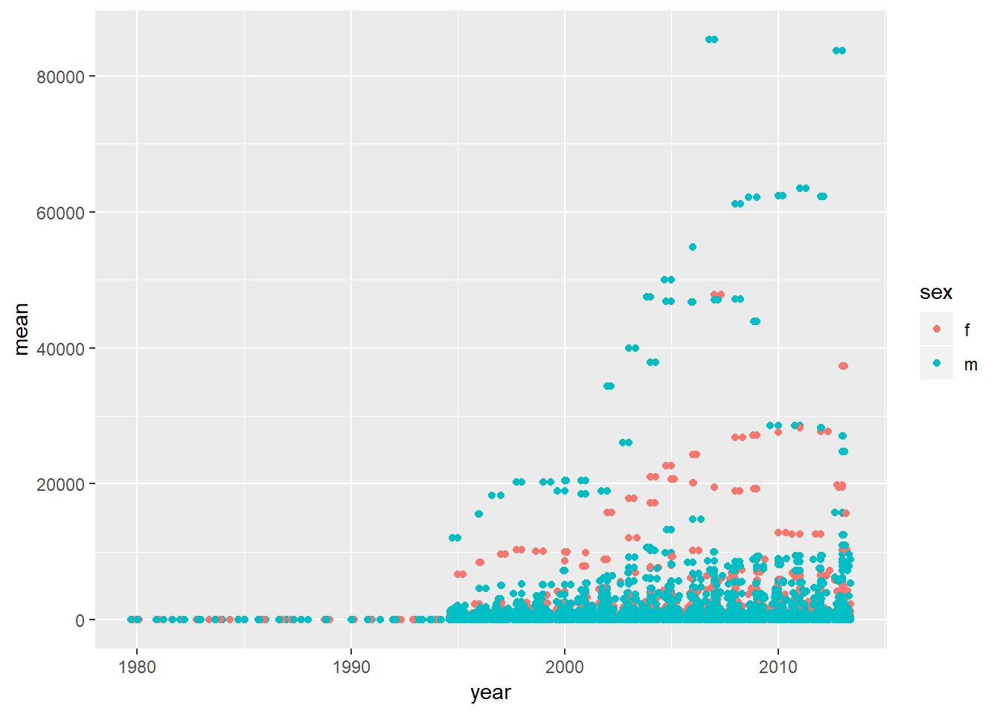
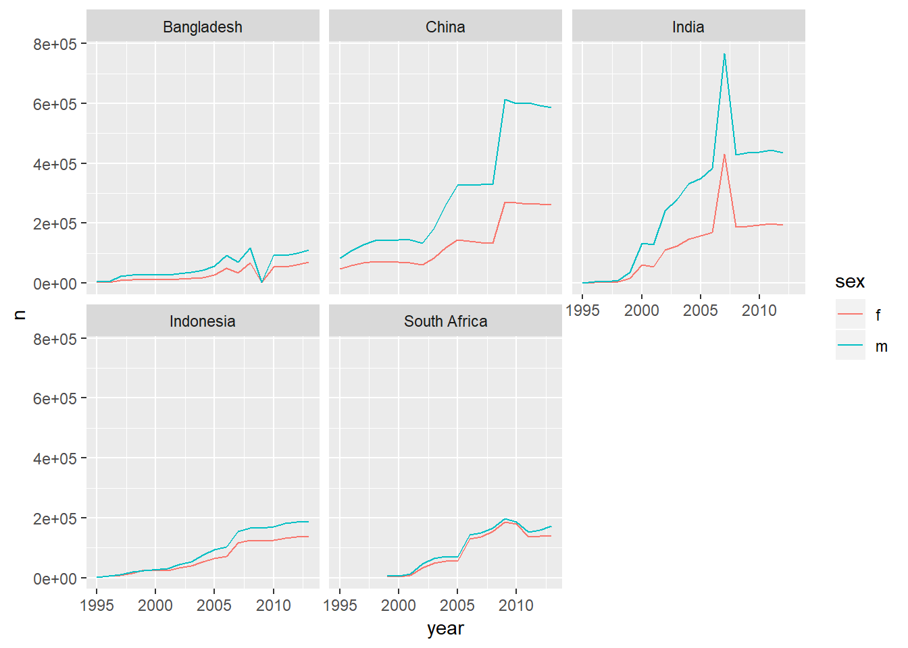
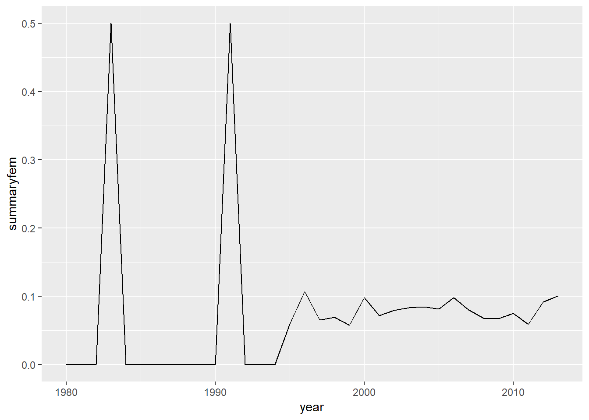

ch. 12: Tidy data
spread: pivot, e.g.spread(iris, Species)gather: unpivot, e.g.gather(mpg, drv, class, key = "drive_or_class", value = "value")separate: one column into many, e.g.separate(table3, rate, into = c("cases", "population"), sep = "/")- default uses non-alphanumeric character as
sep, can also use number to separate by width
- default uses non-alphanumeric character as
extractsimilar to separate but specify what to pull-out rather than what to split byuniteinverse of separate
# example distinguishing separate, extract, unite
tibble(x = c("a,b,c", "d,e,f", "h,i,j", "k,l,m")) %>%
tidyr::separate(x, c("one", "two", "three"), sep = ",", remove = FALSE) %>%
tidyr::unite(one, two, three, col = "x2", sep = ",", remove = FALSE) %>%
tidyr::extract(x2, into = c("a", "b", "c"), regex = "([a-z]+),([a-z]+),([a-z]+)", remove = FALSE)## # A tibble: 4 x 8
## x x2 a b c one two three
## <chr> <chr> <chr> <chr> <chr> <chr> <chr> <chr>
## 1 a,b,c a,b,c a b c a b c
## 2 d,e,f d,e,f d e f d e f
## 3 h,i,j h,i,j h i j h i j
## 4 k,l,m k,l,m k l m k l mcomplete()takes a set of columns, and finds all unique combinations. It then ensures the original dataset contains all those values, filling in explicit NAs where necessary.fill()takes a set of columns where you want missing values to be replaced by the most recent non-missing value (sometimes called last observation carried forward).
# examples of complete and fill
treatment <- tribble(
~ person, ~ treatment, ~response,
"Derrick Whitmore", 1, 7,
NA, 2, 10,
NA, 3, 9,
"Katherine Burke", 1, 4
)
treatment %>%
fill(person)## # A tibble: 4 x 3
## person treatment response
## <chr> <dbl> <dbl>
## 1 Derrick Whitmore 1 7
## 2 Derrick Whitmore 2 10
## 3 Derrick Whitmore 3 9
## 4 Katherine Burke 1 4## # A tibble: 6 x 3
## person treatment response
## <chr> <dbl> <dbl>
## 1 Derrick Whitmore 1 7
## 2 Derrick Whitmore 2 10
## 3 Derrick Whitmore 3 9
## 4 Katherine Burke 1 4
## 5 Katherine Burke 2 NA
## 6 Katherine Burke 3 NA12.2: Tidy data
12.2.1.
1. Using prose, describe how the variables and observations are organised in each of the sample tables.
table1: each country-year is a row with cases and pop as values
table2: each country-year-type is a row
table3: each country-year is a row with rate containing values for bothcasesandpopulation
table4aandtable4b: a represents cases, b population, each row is a country and then column are the year for the value
2. Compute the rate for table2, and table4a + table4b. You will need to perform four operations:
- Extract the number of TB cases per country per year.
- Extract the matching population per country per year.
- Divide cases by population, and multiply by 10000.
- Store back in the appropriate place.
- Which representation is easiest to work with? Which is hardest? Why?
with table2:
table2 %>%
spread(type, count) %>%
mutate(rate = 1000 * cases / population) %>%
arrange(country, year)## # A tibble: 6 x 5
## country year cases population rate
## <chr> <int> <int> <int> <dbl>
## 1 Afghanistan 1999 745 19987071 0.0373
## 2 Afghanistan 2000 2666 20595360 0.129
## 3 Brazil 1999 37737 172006362 0.219
## 4 Brazil 2000 80488 174504898 0.461
## 5 China 1999 212258 1272915272 0.167
## 6 China 2000 213766 1280428583 0.167with table4 ‘a’ and ‘b’`:
table4a %>%
gather(2,3, key = "year", value = "cases") %>%
inner_join(table4b %>%
gather(c(2,3), key = "year", value = "population"),
by = c("country", "year")) %>%
mutate(rate = 1000 * cases / population)## # A tibble: 6 x 5
## country year cases population rate
## <chr> <chr> <int> <int> <dbl>
## 1 Afghanistan 1999 745 19987071 0.0373
## 2 Brazil 1999 37737 172006362 0.219
## 3 China 1999 212258 1272915272 0.167
## 4 Afghanistan 2000 2666 20595360 0.129
## 5 Brazil 2000 80488 174504898 0.461
## 6 China 2000 213766 1280428583 0.167- between these,
table2was easier, thoughtable1would have been easiest – is fewer steps to get 1 row = 1 observation (if we define an observation as a country in a year with certain attributes)
3. Recreate the plot showing change in cases over time using table2 instead of table1. What do you need to do first?
table2 %>%
spread(type, count) %>%
ggplot(aes(x = year, y = cases, group = country))+
geom_line(colour = "grey50")+
geom_point(aes(colour = country))
- first had to spread data
12.3: Spreading and gathering
12.3.3.
1. Why are gather() and spread() not perfectly symmetrical?
Carefully consider the following example:
stocks <- tibble(
year = c(2015, 2015, 2016, 2016),
half = c( 1, 2, 1, 2),
return = c(1.88, 0.59, 0.92, 0.17)
)
stocks %>%
spread(year, return) %>%
gather("year", "return", `2015`:`2016`)## # A tibble: 4 x 3
## half year return
## <dbl> <chr> <dbl>
## 1 1 2015 1.88
## 2 2 2015 0.59
## 3 1 2016 0.92
## 4 2 2016 0.17(Hint: look at the variable types and think about column names.)
- are not perfectly symmetrical, because type for key = changes to character when using
gather– column type information is not transferred.
position of columns change as well
Both spread() and gather() have a convert argument. What does it do?*
Use this to automatically change key column type, otherwise will default in gather for example to become a character type.
2. Why does this code fail?
## Error in inds_combine(.vars, ind_list): Position must be between 0 and nNeed backticks on year column names
## # A tibble: 6 x 3
## country year cases
## <chr> <chr> <int>
## 1 Afghanistan 1999 745
## 2 Brazil 1999 37737
## 3 China 1999 212258
## 4 Afghanistan 2000 2666
## 5 Brazil 2000 80488
## 6 China 2000 2137663. Why does spreading this tibble fail? How could you add a new column to fix the problem?
people <- tribble(
~name, ~key, ~value,
#-----------------|--------|------
"Phillip Woods", "age", 45,
"Phillip Woods", "height", 186,
"Phillip Woods", "age", 50,
"Jessica Cordero", "age", 37,
"Jessica Cordero", "height", 156
)
people %>%
spread(key = "key", value = "value")## Error: Each row of output must be identified by a unique combination of keys.
## Keys are shared for 2 rows:
## * 1, 3
## Do you need to create unique ID with tibble::rowid_to_column()?Fails because you have more than one age for philip woods, could add a unique ID column and it will work.
## # A tibble: 5 x 4
## name id age height
## <chr> <int> <dbl> <dbl>
## 1 Jessica Cordero 4 37 NA
## 2 Jessica Cordero 5 NA 156
## 3 Phillip Woods 1 45 NA
## 4 Phillip Woods 2 NA 186
## 5 Phillip Woods 3 50 NA4. Tidy the simple tibble below. Do you need to spread or gather it? What are the variables?
Need to gather gender
## # A tibble: 4 x 3
## pregnant gender Number
## <chr> <chr> <dbl>
## 1 yes male NA
## 2 no male 20
## 3 yes female 10
## 4 no female 1212.4: Separating and uniting
12.4.3.
1. What do the extra and fill arguments do in separate()? Experiment with the various options for the following two toy datasets.
## Warning: Expected 3 pieces. Additional pieces discarded in 1 rows [2].## # A tibble: 3 x 3
## one two three
## <chr> <chr> <chr>
## 1 a b c
## 2 d e f
## 3 h i j## Warning: Expected 3 pieces. Missing pieces filled with `NA` in 1 rows [2].## # A tibble: 3 x 3
## one two three
## <chr> <chr> <chr>
## 1 a b c
## 2 d e <NA>
## 3 f g ifill determines what to do when there are too few arguments, default is to fill right arguments with NA can change this though.
tribble(~a,~b,
"so it goes","hello,you,are") %>%
separate(b, into=c("e","f","g", "h"), sep=",", fill = "left")## # A tibble: 1 x 5
## a e f g h
## <chr> <chr> <chr> <chr> <chr>
## 1 so it goes <NA> hello you areextra determines what to do when you have more splits than you do into spaces. Default is to drop extra
Can change to limit num of splits to length of into with value “merge”
tribble(~a,~b,
"so it goes","hello,you,are") %>%
separate(b, into=c("e","f"), sep=",", extra="merge")## # A tibble: 1 x 3
## a e f
## <chr> <chr> <chr>
## 1 so it goes hello you,are2. Both unite() and separate() have a remove argument. What does it do? Why would you set it to FALSE?
remove = FALSE allows you to specify to keep the input column(s)
tibble(x = c("a,b,c", "d,e,f", "h,i,j", "k,l,m")) %>%
separate(x, c("one", "two", "three"), remove = FALSE) %>%
unite(one, two, three, col = "x2", sep = ",", remove = FALSE)## # A tibble: 4 x 5
## x x2 one two three
## <chr> <chr> <chr> <chr> <chr>
## 1 a,b,c a,b,c a b c
## 2 d,e,f d,e,f d e f
## 3 h,i,j h,i,j h i j
## 4 k,l,m k,l,m k l m3. Compare and contrast separate() and extract(). Why are there three variations of separation (by position, by separator, and with groups), but only one unite?
extract() is like separate() but provide what to capture rather than what to split by as in regex instead of sep.
df <- data.frame(x = c("a-b", "a-d", "b-c", "d&e", NA), y = 1)
df %>%
extract(col = x, into = c("1st", "2nd"), regex = "([A-z]).([A-z])")## 1st 2nd y
## 1 a b 1
## 2 a d 1
## 3 b c 1
## 4 d e 1
## 5 <NA> <NA> 1## 1st 2nd y
## 1 a b 1
## 2 a d 1
## 3 b c 1
## 4 d e 1
## 5 <NA> <NA> 1Because there are many ways to split something up, but only one way to bring multiple things together…
12.5: missing values
12.5.1.
1. Compare and contrast the fill arguments to spread() and complete().
Both create open cells by filling out those that are not currently in the dataset, complete though does it by adding rows of iterations not included, whereas spread does it by the process of spreading out fields and naturally generating values that did not have row values previously. Thefill in each specifies what value should go into these created cells.
treatment2 <- tribble(
~ person, ~ treatment, ~response,
"Derrick Whitmore", 1, 7,
"Derrick Whitmore", 2, 10,
"Derrick Whitmore", 3, 9,
"Katherine Burke", 1, 4
)
treatment2 %>%
complete(person, treatment, fill = list(response = 0))## # A tibble: 6 x 3
## person treatment response
## <chr> <dbl> <dbl>
## 1 Derrick Whitmore 1 7
## 2 Derrick Whitmore 2 10
## 3 Derrick Whitmore 3 9
## 4 Katherine Burke 1 4
## 5 Katherine Burke 2 0
## 6 Katherine Burke 3 0## # A tibble: 2 x 4
## person `1` `2` `3`
## <chr> <dbl> <dbl> <dbl>
## 1 Derrick Whitmore 7 10 9
## 2 Katherine Burke 4 0 02. What does the .direction argument to fill() do?
Let’s you fill either up or down. E.g. below is filling up example.
treatment <- tribble(
~ person, ~ treatment, ~response,
"Derrick Whitmore", 1, 7,
NA, 2, 10,
NA, 3, 9,
"Katherine Burke", 1, 4
)
treatment %>%
fill(person, .direction = "up")## # A tibble: 4 x 3
## person treatment response
## <chr> <dbl> <dbl>
## 1 Derrick Whitmore 1 7
## 2 Katherine Burke 2 10
## 3 Katherine Burke 3 9
## 4 Katherine Burke 1 412.6 Case Study
12.6.1.
1. In this case study I set na.rm = TRUE just to make it easier to check that we had the correct values. Is this reasonable? Think about how missing values are represented in this dataset. Are there implicit missing values? What’s the difference between an NA and zero?
In this case it’s reasonable, an NA perhaps means the metric wasn’t recorded in that year, whereas 0 means it was recorded but there were 0 cases.
Implicit missing values represented by say Afghanistan not having any reported cases for females.
2. What happens if you neglect the mutate() step? (mutate(key = stringr::str_replace(key, "newrel", "new_rel")))
You would have had one less column, so ‘newtype’ would have been on column, rather than these splitting.
3. I claimed that iso2 and iso3 were redundant with country. Confirm this claim.
## # A tibble: 1 x 1
## n
## <int>
## 1 219who %>%
select(1:3) %>%
distinct() %>%
unite(country, iso2, iso3, col = "country_combined") %>%
count()## # A tibble: 1 x 1
## n
## <int>
## 1 219Both of the above are the same length.
4. For each country, year, and sex compute the total number of cases of TB. Make an informative visualisation of the data.
who_present <- who %>%
gather(code, value, new_sp_m014:newrel_f65, na.rm = TRUE) %>%
mutate(code = stringr::str_replace(code, "newrel", "new_rel")) %>%
separate(code, c("new", "var", "sexage")) %>%
select(-new, -iso2, -iso3) %>%
separate(sexage, c("sex", "age"), sep = 1)who_present %>%
group_by(sex, year, country) %>%
summarise(mean=mean(value)) %>%
ggplot(aes(x=year, y=mean, colour=sex))+
geom_point()+
geom_jitter()
#ratio of female tb cases over time
who_present %>%
group_by(sex, year) %>%
summarise(meansex=sum(value)) %>%
ungroup() %>%
group_by(year) %>%
mutate(tot=sum(meansex)) %>%
ungroup() %>%
mutate(ratio=meansex/tot) %>%
filter(sex=="f") %>%
ggplot(aes(x=year, y=ratio, colour=sex))+
geom_line()
#countries with the most outbreaks
who_present %>%
group_by(country, year) %>%
summarise(n=sum(value)) %>%
ungroup() %>%
group_by(country) %>%
mutate(total_country=sum(n)) %>%
filter(total_country>1000000) %>%
ggplot(aes(x=year,y=n,colour=country))+
geom_line()
#countries with the most split by gender as well
who_present %>%
group_by(country, sex, year) %>%
summarise(n=sum(value)) %>%
ungroup() %>%
group_by(country) %>%
mutate(total_country=sum(n)) %>%
filter(total_country>1000000) %>%
ggplot(aes(x=year,y=n,colour=sex))+
geom_line()+
facet_wrap(~country)
#take log and summarise
who_present %>%
group_by(country, year) %>%
summarise(n=sum(value), logn=log(n)) %>%
ungroup() %>%
group_by(country) %>%
mutate(total_c=sum(n)) %>%
filter(total_c>1000000) %>%
ggplot(aes(x=year,y=logn, colour=country))+
geom_line(show.legend=TRUE)
#average # of countries with more female TB cases
who_present %>%
group_by(country, year, sex) %>%
summarise(n=sum(value), logn=log(n)) %>%
ungroup() %>%
group_by(country, year) %>%
mutate(total_c=sum(n)) %>%
ungroup() %>%
mutate(perc_gender=n/total_c, femalemore=ifelse(perc_gender>.5,1,0)) %>%
filter(sex=="f") %>%
group_by(year) %>%
summarise(summaryfem=mean(femalemore,na.rm=TRUE )) %>%
ggplot(aes(x=year,y=summaryfem))+
geom_line()
Make sure the following packages are installed: